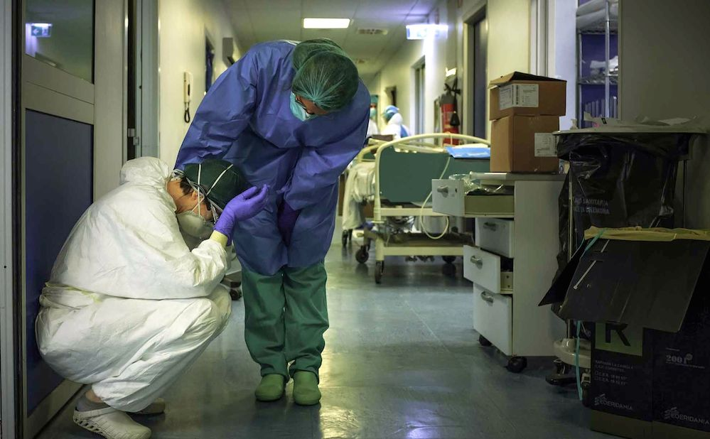
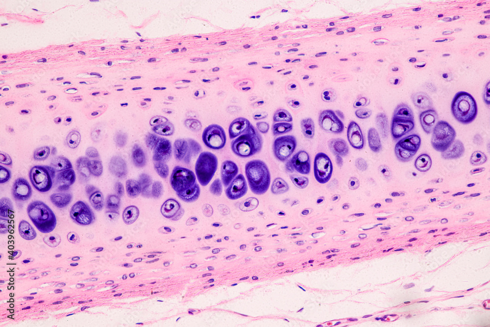
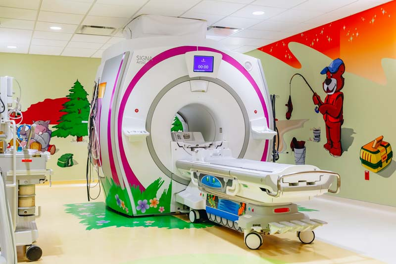
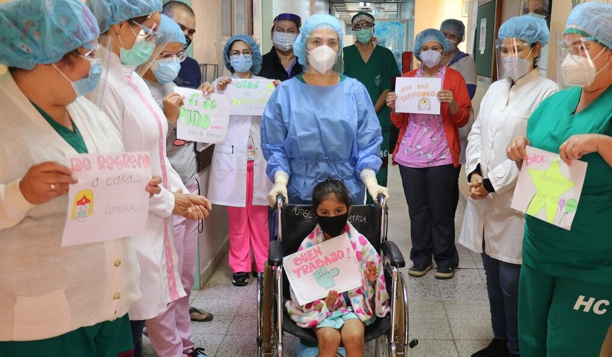

Galeria de arte "El Hospital" - Galería
Dolor del cáncer

- Pareja de fotografos registran el proceso del cancer con el objetivo de dejar un testimonio de lo que significa todo este proceso, link de referencia aquí
Empatia en la niñez

- Uno de los servicios mas complejos son los pediatricos en donde se debe manejar la ansiedad de los niños asi como sus padres, ya que estos lo unico que quieren es que su hijo no sufra, y los niños estan asustados por no estar en su entorno ademas de no comprender a totalidad lo que implica una hospitalizacion.
Dolor mental
- 
- Muchas veces se pasan por situaciones muy estresantes o dolorosas que terminan por colapsar al personal de salud
Arte al microscopio
- 
- Fotografia microscopica de un cartilago, esto se obtiene de biopsias donde son segmentadas y posteriormente se aplican diversos quimicos y colorantes, en azul los nucleos celulares y en rosado el tejido conectivo
Invitacion al juego
- 
- Fotografia un resonador nuclear magnetico adaptado para niños, estas maquinas meten mucho ruido asi como tambien tienen a generar claustrofobia, es vital poder empatizar con pacientes pediatricos para hacer su estadia mas amena
Alta pediatrica
- 
- Fotografia de la celebracion del equipo de salud para una paciente pediatrica que logro superar la enfermedad de COVID